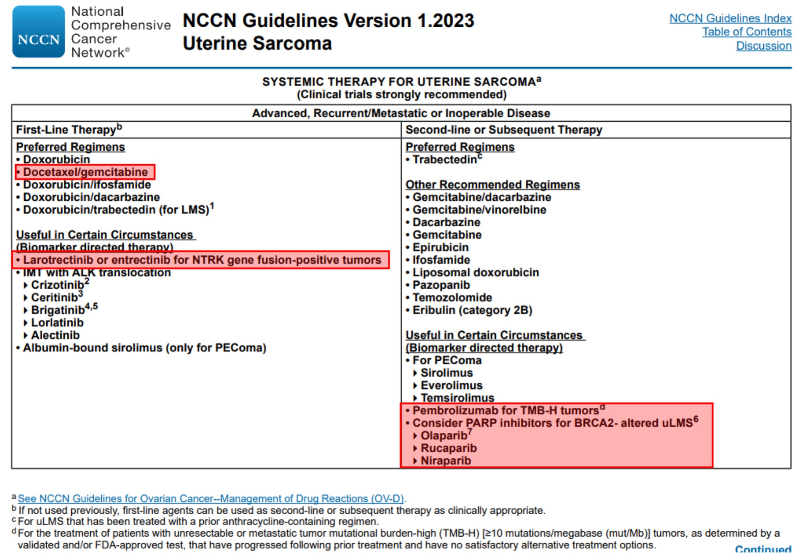

Genetic commentary on the Oncomine results (NCCN-based)
Hello,
Since we are engaged in the clinical use of genomic research, what I submit to the report is primarily based on clinical guidelines, in particular NCCN.
Here are the NCCN recommendations for systemic therapy for uterine sarcomas:

In the first line of therapy, one of the preferred regimens is gemcitabine + docetaxel, which you received, you also added bevacizumab to it, it may increase the likelihood of benefit from therapy, but I do not know about this.
In the second-line of therapy, the standard preferred option of therapy is trabectedin, but given that in uterine leiomyosarcomas may occur some genetic markers, in the presence of which specific therapies are approved, you have been reasonably advised to undergo genetic testing before starting the second line of therapy. Since one of the markers, that is an indication for therapy, is TMB-H, you were recommended the so-called "extended molecular profiling", which studies several hundred genes, because you can more or less accurately estimate the level of TMB by examining at least 300 genes. Also, any profiling includes the determination of NTRK translocations and BRCA1/2 mutations, the presence of which is an indication for appropriate targeted therapy.
In our study, we found no NTRK translocations (larotrectinib and entrectinib were not shown), BRCA1/2 mutations (olaparib, niraparib, rucaparib were not shown), and we also found that the tumor is microsatellite stable (MSS) and has a low level of mutation load (TMB-Low), so immunotherapy is also not indicated.
Speaking about TMB and MSI as indications for immunotherapy for uterine leiomyosarcomas, I want to note that both TMB-H and MSI-H are tumor-agnostic indications for pembrolizumab immunotherapy, respectively, to date, the the clinically significant efficacy of immunotherapy with this drug has been proven only for tumors with TMB-H and MSI-H (https://www.fda.gov/drugs/resources-information-approved-drugs/fda-grants-accelerated-approval- pembrolizumab-first-tissuesite-agnostic-indication https://www.fda.gov/drugs/drug-approvals-and- databases/fda-approves-pembrolizumab-adults-and-children-tmb-h-solid-tumors ). There are no other indications for immunotherapy (such as PD-L1) in uterine leiomyosarcoma, as in other sarcomas. And it is possible to conduct a study on PD-L1, but there is no data on whether to take into account the expression in tumor cells, immune cells, or both, and also what level of PD-L1 is considered positive (1%, 10%, 50% ... ) and which antibody to use. For different types of cancer where PD-L1 is used as an indication for immunotherapy, the criteria and rules for evaluating PD-L1 are different, as are the antibody clones that are used. Therefore, in this case (in the context of PD-L1), I believe that it is better to have no information than incorrect information. So there are no other indications for immunotherapy other than MSI-H and TMB-H for uterine leiomyosarcomas. This does not mean that none of the patients without these markers will benefit from immunotherapy, but the proportion of patients who will benefit will be significantly lower than with these markers, and, to date, we do not know how to additionally select those who will still benefit.
Here are some links on immunotherapy and predictive markers:
https://ascopubs.org/doi/full/10.1200/PO.22.00068
https://www.sciencedirect.com/science/article/pii/S0305737220301535
Here are a few more links to reviews on markers for uterine sarcomas, so that there is an understanding that there are essentially no ready-made markers for clinical use:
https://www.mdpi.com/2072-6694/14/6/1561
https://onlinelibrary.wiley.com/doi/epdf/10.1111/cas.13613
https://www.karger.com/Article/Fulltext/494299
As for KIT mutations, this mutation cannot be present in normal cells, it is a purely tumor, activating mutation in the oncogene, it is present with a high allelic frequency, which may indicate that it is most likely clonal. In gastrointestinal stromal tumors (GIST), such mutations are the main target for appropriate inhibitors, such as imatinib (https://oncologypro.esmo.org/education-library/factsheets-on-biomarkers/kit- in-gastrointestinal-stromal-tumours-gist ). Since imatinib is not registered in leiomyosarcomas, but pazopanib is registered, which is also a KIT inhibitor (this is discussed in a number of links above), the doctor's choice fell on him. To date, it is impossible to predict in which of the patients what adverse reaction will be to a particular drug. And your reaction is definitely not related to the fact that normal tissues also have this mutation. The reasons for these are much more complex, and "comparison with normal tissue" of the found mutations in oncogenes is not carried out anywhere, because hereditary mutations present in normal tissues do not occur in such oncogenes as KIT.
When the patient's condition is stabilized, one of the standard regimens, such as trabectedin, liposomal doxorubicin, or another chemotherapy regimen, can be applied in the next line of therapy. If we focus on the results of molecular profiling, then we can consider imatinib, however, I did not find data on its effectiveness in leiomyosarcomas with mutations (not with "expression", but with "mutation") KIT, we cannot extrapolate the results of imatinib with GIST with a KIT mutation to leiomyosarcoma. Therefore, theoretically, it can be effective, but we cannot be sure of this.
Another potential found target for targeted therapy is MET translocation, but I would not consider these drugs (crizotinib, capmatinib, etc.), because judging by the low number of reads with this translocation, it is subclonal (present only in some tumor cells) and even if she is potentially sensitive to these drugs, there will still be no clinical effect from them.
Immunotherapy can be considered, but the expected likelihood of benefit from it, in the absence of TMB and MSI, is lower than from standard chemotherapy regimens, so the decision is up to you.